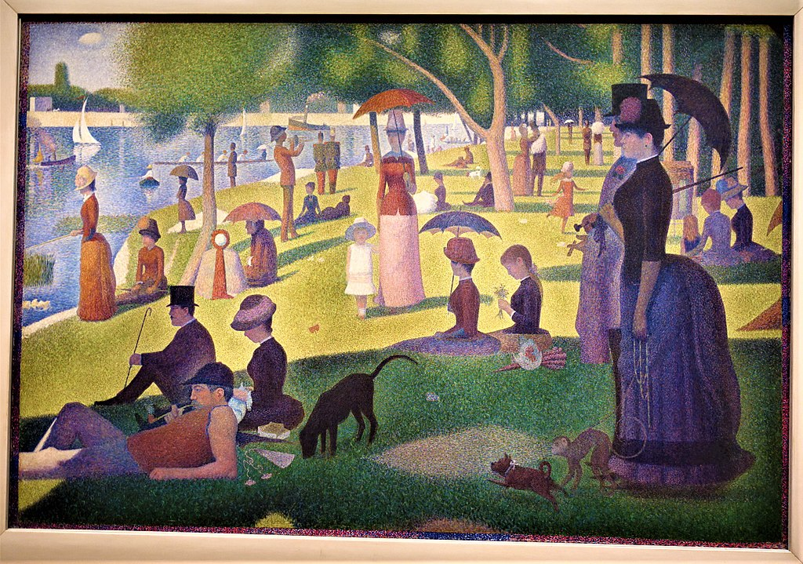

<head>
<meta charset="UTF-8" />
<meta name="keywords" content="drawing, painting" />
<meta name="description" content="drawings by Sunjy" />
<title>Sunjy</title>
<link rel="shortcut icon" type="image/x-icon" href="../../mImages/mCommon/favicon.ico" media="screen" />
<link rel="stylesheet" type="text/css" href="../../mCsses/mCommon/mCssA.css" />
<link rel="stylesheet" type="text/css" href="../../mCsses/mCommon/mCssB.css" />
<link rel="stylesheet" type="text/css" href="../../mCsses/mCommon/mCssC.css" />
<link rel="stylesheet" type="text/css" href="../../mCsses/mCommon/mCssD.css" />
<link rel="stylesheet" type="text/css" href="../../mCsses/mContent/mCssA.css" />
<link rel="stylesheet" type="text/css" href="../../mCsses/mContent/mCssB.css" />
<link rel="stylesheet" type="text/css" href="../../mCsses/mContent/mCssC.css" />
<link rel="stylesheet" type="text/css" href="../../mCsses/mContent/mCssD.css" />
</head>
<script type="text/javascript" src="../../mScripts/mContent/mContentAA.js" /></script>
<script type="text/javascript" src="../../mScripts/mContent/mContentAB.js" /></script>
<script type="text/javascript" src="../../mScripts/mContent/mContentAC.js" /></script>
<script type="text/javascript" src="../../mScripts/mContent/mContentAD.js" /></script>
<script type="text/javascript"></script> 
<script type="text/javascript">
document.write('<div class="mImgAbsolute"></div>');
/*
document.write('<p class="mFontSizeBColor" />From a white paper...</p>');
document.write('<table class="center"><tr><td>');
document.write('');
document.write('</td></tr></table>');
*/
</script>


<script type="text/javascript">
document.write('<p class="mFontSizeBColor" />A Sunday Afternoon on the Island of La Grande Jatte</p>');
document.write('<p class="mFontSizeSColor" />“A Sunday Afternoon on the Island of La Grande Jatte” is one of Georges Seurat’s most famous works, and is a leading example of pointillism technique on a large canvas.<br><br>Seurat’s composition depicts Parisians at a provincial park on the banks of the River Seine. Seurat was one of the leaders of a new and rebellious form of Impressionism called Neo-Impressionism.<br><br>This large-scale work, altered the direction of modern art by initiating Neo-impressionism and is one of the icons of late 19th-century painting.<br><br>Seurat spent over two years painting this masterpiece, and he focused on the landscape of the park with meticulous detail. He reworked the original and completed many preliminary drawings and oil sketches. He concentrated on issues of color, light, and form.<br><br>The Island of La Grande Jatte, when Seurat began the painting in 1884, was a rural retreat far from the city center. Today it is part of a Paris business district.<br><br>Optical effects and perceptions of color inspired Seurat. He experimented with tiny dots or small brushstrokes of colors that, when unified optically in the human eye, were perceived as distinct colors and objects.<br><br>He believed that this form of painting, now known as pointillism, would make the colors more brilliant and powerful than regular brushstrokes.<br><br>This painting inspired “Sunday in the Park with George,” a theatrical musical. The plot revolves around a fictionalized version of Georges Seurat and how he immerses himself in painting his challenging masterpiece. <br><br>The musical won the 1985 Pulitzer Prize for Drama, two Tony Awards for design, and many other awards. In this musical, George announces to the audience:<br><br>“White, a blank page or canvas. The challenge: bring order to the whole, through design, composition, tension, balance, light, and harmony.” <br><br>Seurat was extraordinarily disciplined and steered his own unique direction. He wanted to make a difference in the history of art and with this painting, and he succeeded.<br></p>');
document.write('<table class="center" /><tr><td>');
document.write('<br>Seurat’s composition depicts Parisians at a provincial park on the banks of the River Seine. Seurat was one of the leaders of a new and rebellious form of Impressionism called Neo-Impressionism.<br><br>This large-scale work, altered the direction of modern art by initiating Neo-impressionism and is one of the icons of late 19th-century painting.<br><br>Seurat spent over two years painting this masterpiece, and he focused on the landscape of the park with meticulous detail. He reworked the original and completed many preliminary drawings and oil sketches. He concentrated on issues of color, light, and form.<br><br>The Island of La Grande Jatte, when Seurat began the painting in 1884, was a rural retreat far from the city center. Today it is part of a Paris business district.<br><br>Optical effects and perceptions of color inspired Seurat. He experimented with tiny dots or small brushstrokes of colors that, when unified optically in the human eye, were perceived as distinct colors and objects.<br><br>He believed that this form of painting, now known as pointillism, would make the colors more brilliant and powerful than regular brushstrokes.<br><br>This painting inspired “Sunday in the Park with George,” a theatrical musical. The plot revolves around a fictionalized version of Georges Seurat and how he immerses himself in painting his challenging masterpiece. <br><br>The musical won the 1985 Pulitzer Prize for Drama, two Tony Awards for design, and many other awards. In this musical, George announces to the audience:<br><br>“White, a blank page or canvas. The challenge: bring order to the whole, through design, composition, tension, balance, light, and harmony.” <br><br>Seurat was extraordinarily disciplined and steered his own unique direction. He wanted to make a difference in the history of art and with this painting, and he succeeded.<br>" />');
document.write('</td></tr></table>');
</script>


